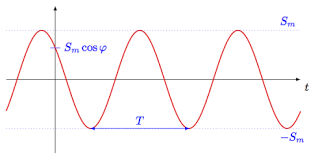
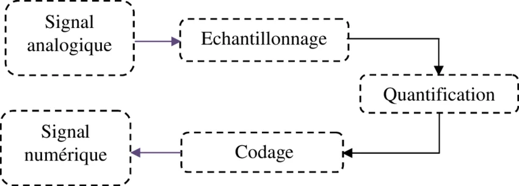
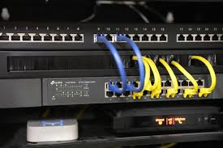
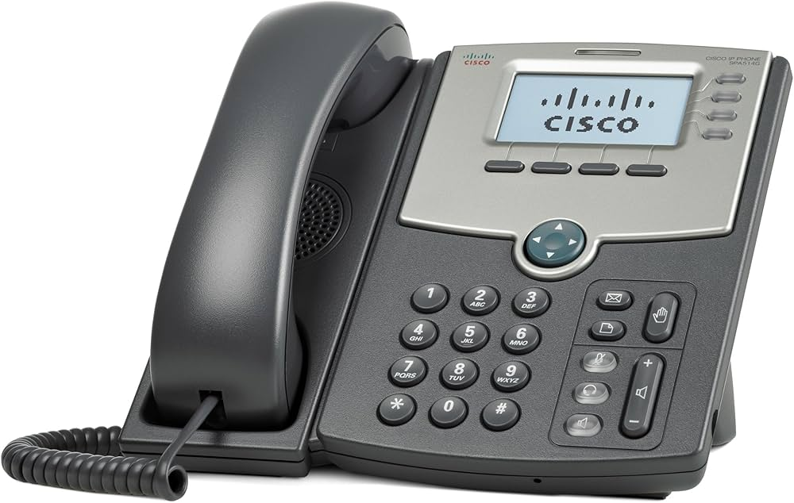

Bloc de Compétences 2
Connecter les entreprises et les usagers
Démarche réflexive et analytique sur l'analyse approfondie des signaux, le déploiement de transmissions complexes et la mise en place d'accès distants sécurisés.
AC22.01 // Transmissions Complexes & Analyse Spectrale
 [Capture Analyseur de Spectre / Diagramme]
[Capture Analyseur de Spectre / Diagramme]
Déployer et caractériser des systèmes de transmissions complexes
- Ce que j'ai fait : Analyse sur banc de mesure et analyseur de spectre de signaux modulés (ASK, FSK, PSK), et caractérisation de liaisons optiques monomodes/multimodes (calculs d'affaiblissement).
- Pourquoi je l'ai fait : Pour maîtriser la propagation des signaux hertziens et optiques haut débit dans les réseaux de télécommunications modernes.
- Comment je l'ai fait : Manipulation d'analyseurs de spectre, calculs de bilans de liaison en décibels (dBm / dBi) et exploitation des diagrammes de l'œil.
- Mes difficultés : Isoler le bruit thermique ambiant lors des mesures de sensibilité sur les canaux de transmission hertziens.
- Ce que j'en ai appris : La compréhension fine de la couche physique et des modulations est indispensable pour anticiper les erreurs de transmission de données.
- Ce que je ferais autrement : Étalonner rigoureusement les sondes de l'analyseur avant chaque série de mesures expérimentales.
Trace Pertinente
[Capture Analyseur de Spectre / Diagramme]
AC22.02 // Accès Distant & VPN
 [État IPsec SA & Capture Wireshark]
[État IPsec SA & Capture Wireshark]
Mettre en place un accès distant sécurisé
- Ce que j'ai fait : Configuration de tunnels VPN IPsec site-à-site et d'accès nomades chiffrés pour interconnecter des sites distants de manière sécurisée.
- Pourquoi je l'ai fait : Pour garantir la confidentialité et l'intégrité des flux d'entreprise traversant des réseaux publics non de confiance.
- Comment je l'ai fait : Paramétrage des phases IKEv1/IKEv2, choix des algorithmes cryptographiques (AES-256, SHA-256) et validation des flux par Wireshark.
- Mes difficultés : Synchroniser les propositions de chiffrement et les politiques de sécurité (Crypto ACL) entre des routeurs de marques différentes.
- Ce que j'en ai appris : Un tunnel VPN robuste repose sur une rigueur mathématique dans le choix des clés et des protocoles d'échange.
- Ce que je ferais autrement : Rédiger une spécification technique détaillée des paramètres cryptographiques avant l'implémentation.
Trace Pertinente
[État IPsec SA & Capture Wireshark]
AC22.03 // Interconnexion Multi-sites
 [Topologie WAN Multi-sites GNS3]
[Topologie WAN Multi-sites GNS3]
Mettre en place une connexion multi-sites via un réseau opérateur
- Ce que j'ai fait : Simulation et configuration de liaisons inter-sites à travers une architecture opérateur (technologies VLAN de niveau 2, MPLS et liaisons dédiées).
- Pourquoi je l'ai fait : Pour relier des agences géographiquement distantes au siège social en garantissant des niveaux de service (QoS) adaptés.
- Comment je l'ai fait : Configuration de sous-interfaces de routage et application de politiques de marquage des paquets sur les équipements de périphérie WAN.
- Mes difficultés : Valider le comportement du routage dynamique à travers la topologie de transport de l'opérateur simulé.
- Ce que j'en ai appris : L'interconnexion multi-sites nécessite une coordination stricte entre les plans d'adressage internes et les services loués.
- Ce que je ferais autrement : Simuler des scénarios de coupure de lien principal pour tester le basculement automatique sur la liaison de secours.
Trace Pertinente
[Topologie WAN Multi-sites GNS3]
AC22.04 // Téléphonie IP Avancée & ToIP
 [Console Asterisk / Enregistrement SIP]
[Console Asterisk / Enregistrement SIP]
Déployer des serveurs de ToIP et gérer les flux convergents
- Ce que j'ai fait : Installation et configuration d'un IPBX (Asterisk / serveur SIP), enregistrement de postes téléphoniques IP et mise en place de files d'attente et règles de numérotation.
- Pourquoi je l'ai fait : Pour maîtriser le déploiement de la voix sur IP et la convergence des flux multimédias sur une infrastructure IP unifiée.
- Comment je l'ai fait : Paramétrage des fichiers de conf SIP (`sip.conf`, `extensions.conf`), gestion des codecs audio et priorisation des paquets voix (QoS / DiffServ).
- Mes difficultés : Résoudre les problèmes de NAT et de rebond audio (one-way audio) lors des appels traversant des pare-feux.
- Ce que j'en ai appris : La ToIP est extrêmement sensible aux délais et à la gigue ; la mise en place d'une politique de QoS rigoureuse est non négociable.
- Ce que je ferais autrement : Documenter précisément les plans de numérotation et tester systématiquement les codecs pris en charge.
Trace Pertinente
[Console Asterisk / Enregistrement SIP]
AC22.05 // Cahier des Charges & Analyse R&T
 [Extrait Dossier d'Architecture Technique]
[Extrait Dossier d'Architecture Technique]
Capacité à questionner un cahier des charges R&T et dimensionner une solution
- Ce que j'ai fait : Analyse critique d'un cahier des charges client pour un projet d'infrastructure, estimation des besoins en bande passante et choix argumenté des équipements de raccordement.
- Pourquoi je l'ai fait : Pour apprendre à traduire un besoin métier exprimé par un client en spécifications techniques réalisables et budgétisées.
- Comment je l'ai fait : Rédaction de dossiers d'architecture technique (DAT), chiffrage prévisionnel et confrontation des contraintes budgétaires aux exigences de performance.
- Mes difficultés : Anticiper la croissance future du trafic pour éviter le sous-dimensionnement des liens WAN proposés.
- Ce que j'en ai appris : Un bon ingénieur réseau doit savoir écouter le client, décoder les zones d'ombre d'un cahier des charges et proposer une solution évolutive.
- Ce que je ferais autrement : Intégrer des clauses de réversibilité et de tolérance de charge explicites dès la phase de rédaction.
Trace Pertinente
[Extrait Dossier d'Architecture Technique]
AC12.01 // Théorie du Signal
Mesurer, analyser et commenter les signaux
- Ce que j'ai fait : J'ai branché des générateurs de signaux à des oscilloscopes pour capturer, observer et extraire les grandeurs physiques de diverses ondes.
- Pourquoi je l'ai fait : Pour confronter les concepts mathématiques abstraits à la réalité physique des signaux électriques qui transportent la donnée.
- Comment je l'ai fait : En mobilisant les formules du module R1.13 (Mathématiques du signal) afin de calculer précisément des périodes, fréquences et amplitudes crête à crête.
- Mes difficultés : Régler correctement la synchronisation (Trigger) de l'oscilloscope sur des signaux bruités pour stabiliser l'affichage à l'écran.
- Ce que j'en ai appris : Qu'aucun signal réel n'est parfait et que la distorsion physique impacte directement la qualité de la liaison informatique.
- Ce que je ferais autrement : Prendre des notes systématiques et rigoureuses des échelles de l'appareil (Volts/Div) pour accélérer la rédaction du compte-rendu de TP.
Trace Pertinente

[Capture Écran Courbe Oscilloscope]
AC12.02 // Transmissions
Caractériser des systèmes de transmissions élémentaires
- Ce que j'ai fait : J'ai étudié les architectures de chaînes de transmission (modulation, numérisation) et analysé l'impact de l'atténuation sur la fibre optique et le cuivre.
- Pourquoi je l'ai fait : Pour assimiler le fonctionnement mathématique et physique du transport binaire de l'information sur de longues distances.
- Comment je l'ai fait : Lors de la SAÉ 1.03, en m'appuyant sur les modules théoriques de numérisation (R2.06) et en simulant des comportements de canaux bruités.
- Mes difficultés : Comprendre et appliquer les calculs de puissance en Décibels (dB) appliqués aux pertes en ligne de la fibre optique.
- Ce que j'en ai appris : Le choix d'un média physique (cuivre vs fibre) est un compromis strict dicté par des contraintes de distance, de bande passante et d'atténuation.
- Ce que je ferais autrement : Multiplier les exercices de modélisation sur logiciel (Scilab/Python) pour mieux visualiser l'influence du bruit thermique.
Trace Pertinente

[Schéma Chaîne de Transmission / Graphique]
AC12.03 // Infrastructures Physiques
Déployer des supports de transmission
- Ce que j'ai fait : J'ai réalisé des opérations de dénudage, câblé des brins RJ45, effectué des raccordements sur des panneaux de brassage et testé la continuité.
- Pourquoi je l'ai fait : Pour maîtriser la couche 1 (Physique) du modèle OSI et garantir une infrastructure de câblage saine pour les couches supérieures.
- Comment je l'ai fait : Lors d'ateliers de TP pratiques, équipé de pinces à sertir, de dénudeurs de câbles torsadés et de testeurs de continuité de paires.
- Mes difficultés : Respecter scrupuleusement l'ordre exact des couleurs de la norme T568B sans croiser ou fragiliser les fils de cuivre lors de l'insertion dans la fiche.
- Ce que j'en ai appris : Un réseau ultra-performant côté logiciel s'effondre instantanément si le déploiement physique souffre d'un mauvais contact.
- Ce que je ferais autrement : Tester systématiquement le câble de manière isolée avant de l'intégrer définitivement dans la goulotte ou la baie de brassage.
Trace Pertinente

[Photo Câble Serti / Baie de Brassage]
AC12.04 // Téléphonie sur IP
Connecter les systèmes de ToIP
- Ce que j'ai fait : J'ai raccordé des téléphones IP au réseau local, configuré des extensions de base et validé l'établissement de communications vocales.
- Pourquoi je l'ai fait : Pour appréhender l'intégration des services de voix convergés sur une infrastructure de données IP classique.
- Comment je l'ai fait : En exploitant les TP dédiés à la téléphonie, en attribuant dynamiquement des profils via DHCP et en analysant l'enregistrement de terminaux.
- Mes difficultés : Assurer la priorisation des flux (QoS) dans les commutateurs pour éviter les coupures ou dégradations de la voix lors des appels.
- Ce que j'en ai appris : Que la voix sur IP requiert une stabilité réseau accrue par rapport au simple transfert de fichiers Web.
- Ce que je ferais autrement : Rédiger un schéma d'architecture ToIP complet intégrant les numéros de ports logiques avant de lancer les configurations.
Trace Pertinente

[Topologie VoIP / Capture Téléphone IP]
AC12.05 // Communication Professionnelle
Communiquer avec un tiers et adapter son discours
- Ce que j'ai fait : J'ai participé à des simulations de présentations techniques, rédigé des mails formels et présenté l'état d'avancement de mes projets.
- Pourquoi je l'ai fait : Pour être capable d'interagir efficacement avec un client ou un collègue en adaptant mon vocabulaire technique selon son profil.
- Comment je l'ai fait : En m'appuyant sur les modules d'expression-communication et d'anglais technique pour structurer des argumentations professionnelles.
- Mes difficultés : Réussir à vulgariser instantanément des acronymes réseaux complexes (ex : NAT, DHCP, VLAN) face à un interlocuteur non technique.
- Ce que j'en ai appris : Un excellent technicien doit aussi être un bon communicant ; savoir expliquer clairement une solution est la clé de la relation client.
- Ce que je ferais autrement : Préparer systématiquement un glossaire simplifié ou des schémas visuels d'appui avant d'entamer une réunion de restitution.